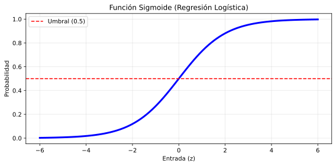

🤖 Unidad 3. Modelos de Aprendizaje Supervisado para Predicción Categórica
La clasificación es una subcategoría del aprendizaje supervisado donde el objetivo es predecir una etiqueta de clase categórica (discreta) para una instancia de datos dada. A diferencia de la regresión, que predice valores continuos, la clasificación asigna entradas a una de varias categorías predefinidas.

3.1. Entrenamiento y Testing en Clasificación
El proceso de construcción de un modelo de clasificación sigue el flujo estándar de Machine Learning:
- División de Datos: Se divide el dataset en un conjunto de entrenamiento (para ajustar el modelo) y un conjunto de prueba (para evaluar su rendimiento en datos no vistos).
- Entrenamiento: El algoritmo aprende la frontera de decisión que separa las diferentes clases basándose en las características (features) de los datos de entrenamiento.
- Testing (Predicción): El modelo asigna etiquetas a los datos de prueba.
- Evaluación: Se comparan las etiquetas predichas con las etiquetas reales para calcular métricas de rendimiento.
3.2. Ejemplos Frecuentes de Uso
La clasificación está omnipresente en aplicaciones modernas:
- Detección de Spam: Clasificar correos como "Spam" o "No Spam".
- Diagnóstico Médico: Determinar si un paciente tiene una enfermedad ("Positivo") o no ("Negativo") basándose en síntomas y análisis.
- Reconocimiento de Imágenes: Identificar si una imagen contiene un "Gato", "Perro" o "Coche".
- Aprobación de Créditos: Clasificar a un solicitante como de "Alto Riesgo" o "Bajo Riesgo".
- Análisis de Sentimientos: Clasificar opiniones como "Positivas", "Negativas" o "Neutrales".
3.3. Algoritmos de Clasificación en Machine Learning
Existen diversos algoritmos para abordar problemas de clasificación:
- Regresión Logística: Simple, interpretable y base para redes neuronales.
- K-Nearest Neighbors (KNN): Basado en similitud y distancia.
- Support Vector Machines (SVM): Busca el hiperplano de separación óptimo.
- Árboles de Decisión y Random Forest: Basados en reglas de decisión jerárquicas.
- Naive Bayes: Basado en probabilidad y el teorema de Bayes.
- Redes Neuronales: Para patrones complejos y datos no estructurados.
3.4. Regresión Logística
A pesar de su nombre, la Regresión Logística es un algoritmo de clasificación, no de regresión. Se utiliza para estimar la probabilidad de que una instancia pertenezca a una clase particular (por ejemplo, probabilidad de que un correo sea spam).
Conceptos Básicos y Matemáticos
La regresión logística utiliza la función sigmoide (o logística) para transformar la salida de una ecuación lineal en un valor de probabilidad entre 0 y 1.
- Función Lineal: \(z = w \cdot x + b\) (donde \(w\) son los pesos y \(x\) las características).
- Función Sigmoide: \(\sigma(z) = \frac{1}{1 + e^{-z}}\)
Si la probabilidad estimada \(\hat{p} = \sigma(z)\) es mayor o igual a 0.5, el modelo predice la clase 1; de lo contrario, predice la clase 0.
Algoritmo del Gradiente Descendente
Para entrenar el modelo, necesitamos encontrar los pesos \(w\) y el sesgo \(b\) que minimicen el error. La función de costo utilizada es la Log Loss (Pérdida Logarítmica), ya que el error cuadrático medio no es convexo para esta función.
El Gradiente Descendente es un algoritmo de optimización iterativo: 1. Inicializa los pesos aleatoriamente. 2. Calcula el gradiente de la función de costo (la dirección en la que el error aumenta más rápido). 3. Actualiza los pesos moviéndose en la dirección opuesta al gradiente para reducir el error. $\(w_{nuevo} = w_{viejo} - \eta \cdot \nabla Costo\)$ (Donde \(\eta\) es la tasa de aprendizaje).
Ejemplo en Python
from sklearn.linear_model import LogisticRegression
from sklearn.model_selection import train_test_split
from sklearn.datasets import load_breast_cancer
from sklearn.preprocessing import StandardScaler
from sklearn.metrics import accuracy_score, classification_report
import matplotlib.pyplot as plt
import numpy as np
# Cargar datos
data = load_breast_cancer()
X, y = data.data, data.target
print(f"Clases: {data.target_names}")
print(f"Número de características: {X.shape[1]}")
print(f"Distribución de clases: Maligno={np.sum(y==0)}, Benigno={np.sum(y==1)}")
# Dividir y Escalar (Importante para Gradiente Descendente)
X_train, X_test, y_train, y_test = train_test_split(X, y, test_size=0.2, random_state=42)
scaler = StandardScaler()
X_train = scaler.fit_transform(X_train)
X_test = scaler.transform(X_test)
# Entrenar modelo
log_reg = LogisticRegression(max_iter=1000, random_state=42)
log_reg.fit(X_train, y_train)
# Predecir
y_pred = log_reg.predict(X_test)
y_pred_proba = log_reg.predict_proba(X_test) # Probabilidades
# Evaluación
print(f"\nAccuracy: {accuracy_score(y_test, y_pred):.4f}")
print("\nReporte de Clasificación:")
print(classification_report(y_test, y_pred, target_names=data.target_names))
# Visualizar probabilidades predichas
plt.figure(figsize=(12, 5))
plt.subplot(1, 2, 1)
plt.hist(y_pred_proba[y_test==0][:, 1], bins=20, alpha=0.7, label='Maligno (Real)', color='red')
plt.hist(y_pred_proba[y_test==1][:, 1], bins=20, alpha=0.7, label='Benigno (Real)', color='green')
plt.xlabel('Probabilidad predicha de ser Benigno')
plt.ylabel('Frecuencia')
plt.title('Distribución de Probabilidades Predichas')
plt.legend()
plt.axvline(x=0.5, color='black', linestyle='--', label='Umbral=0.5')
# Visualizar coeficientes más importantes
plt.subplot(1, 2, 2)
feature_importance = np.abs(log_reg.coef_[0])
top_features_idx = np.argsort(feature_importance)[-10:]
plt.barh(range(len(top_features_idx)), feature_importance[top_features_idx])
plt.yticks(range(len(top_features_idx)), [data.feature_names[i] for i in top_features_idx])
plt.xlabel('Importancia (|coeficiente|)')
plt.title('Top 10 Características Más Importantes')
plt.tight_layout()
plt.show()
3.5. Métricas de Rendimiento
Evaluar un clasificador va más allá de simplemente contar cuántos aciertos tuvo.
Matriz de Confusión
Es una tabla que resume el rendimiento del modelo comparando las clases reales con las predichas.
| Predicho Negativo (0) | Predicho Positivo (1) | |
|---|---|---|
| Real Negativo (0) | TN (True Negative) | FP (False Positive) |
| Real Positivo (1) | FN (False Negative) | TP (True Positive) |
- TP: Enfermos detectados correctamente.
- TN: Sanos detectados correctamente.
- FP (Error Tipo I): Sanos detectados erróneamente como enfermos ("Falsa Alarma").
- FN (Error Tipo II): Enfermos no detectados ("Peligroso").
Métricas Derivadas
-
Accuracy (Exactitud): Proporción total de predicciones correctas. $\(Accuracy = \frac{TP + TN}{TP + TN + FP + FN}\)$
-
Error Rate (Tasa de Error): Proporción de predicciones incorrectas. $\(Error Rate = 1 - Accuracy = \frac{FP + FN}{Total}\)$
-
Sensitivity / Recall / TPR (Tasa de Verdaderos Positivos): Capacidad para detectar la clase positiva. $\(Sensitivity = \frac{TP}{TP + FN}\)$
-
Specificity / TNR (Tasa de Verdaderos Negativos): Capacidad para detectar la clase negativa. $\(Specificity = \frac{TN}{TN + FP}\)$
-
False Positive Rate (FPR): $\(FPR = 1 - Specificity = \frac{FP}{TN + FP}\)$
-
Precision (Precisión): De los que predije positivos, ¿cuántos lo son realmente? $\(Precision = \frac{TP}{TP + FP}\)$
-
F1-Score (F-Measure): Media armónica de Precision y Recall. Útil cuando las clases están desbalanceadas. $\(F1 = 2 \cdot \frac{Precision \cdot Recall}{Precision + Recall}\)$
-
Kappa Statistic (Cohen's Kappa): Mide la concordancia entre la predicción y la realidad, ajustada por el azar. Un valor de 1 es concordancia perfecta, 0 es igual al azar.
Ejemplo en Python
from sklearn.metrics import confusion_matrix, classification_report, cohen_kappa_score
from sklearn.metrics import ConfusionMatrixDisplay
import matplotlib.pyplot as plt
import numpy as np
# Matriz de confusión
cm = confusion_matrix(y_test, y_pred)
print("Matriz de Confusión:")
print(cm)
# Visualizar matriz de confusión
fig, axes = plt.subplots(1, 2, figsize=(14, 5))
# Matriz de confusión con números absolutos
disp = ConfusionMatrixDisplay(confusion_matrix=cm, display_labels=data.target_names)
disp.plot(ax=axes[0], cmap='Blues', values_format='d')
axes[0].set_title('Matriz de Confusión (Valores Absolutos)')
# Matriz de confusión normalizada
cm_normalized = cm.astype('float') / cm.sum(axis=1)[:, np.newaxis]
disp_norm = ConfusionMatrixDisplay(confusion_matrix=cm_normalized, display_labels=data.target_names)
disp_norm.plot(ax=axes[1], cmap='Blues', values_format='.2%')
axes[1].set_title('Matriz de Confusión (Normalizada)')
plt.tight_layout()
plt.show()
# Reporte detallado
print("\nReporte de Clasificación:")
print(classification_report(y_test, y_pred, target_names=data.target_names))
# Kappa Score
kappa = cohen_kappa_score(y_test, y_pred)
print(f"\nKappa Score: {kappa:.4f}")
# Calcular métricas manualmente para entender mejor
TN, FP, FN, TP = cm.ravel()
print("\nMétricas Calculadas Manualmente:")
print(f"TP (True Positives): {TP}")
print(f"TN (True Negatives): {TN}")
print(f"FP (False Positives): {FP}")
print(f"FN (False Negatives): {FN}")
print(f"\nAccuracy: {(TP + TN) / (TP + TN + FP + FN):.4f}")
print(f"Precision: {TP / (TP + FP):.4f}")
print(f"Recall (Sensitivity): {TP / (TP + FN):.4f}")
print(f"Specificity: {TN / (TN + FP):.4f}")
print(f"F1-Score: {2 * (TP / (TP + FP)) * (TP / (TP + FN)) / ((TP / (TP + FP)) + (TP / (TP + FN))):.4f}")
3.6. Curva ROC y AUC
La Curva ROC (Receiver Operating Characteristic) es un gráfico que ilustra el rendimiento de un clasificador binario a medida que varía el umbral de discriminación. * Eje X: False Positive Rate (1 - Specificity). * Eje Y: True Positive Rate (Sensitivity).
Un modelo ideal se acerca a la esquina superior izquierda (TPR=1, FPR=0). La línea diagonal representa un clasificador aleatorio.
AUC (Area Under Curve): Es el área bajo la curva ROC. Resume el rendimiento en un solo número. * AUC = 0.5: Aleatorio. * AUC = 1.0: Perfecto.
Ejemplo en Python: Curva ROC
from sklearn.metrics import roc_curve, auc, RocCurveDisplay
import matplotlib.pyplot as plt
import numpy as np
# Obtener probabilidades predichas (necesarias para ROC)
y_pred_proba = log_reg.predict_proba(X_test)[:, 1] # Probabilidad de clase positiva
# Calcular curva ROC
fpr, tpr, thresholds = roc_curve(y_test, y_pred_proba)
roc_auc = auc(fpr, tpr)
print(f"AUC Score: {roc_auc:.4f}")
# Visualizar curva ROC
fig, axes = plt.subplots(1, 2, figsize=(14, 5))
# Curva ROC
axes[0].plot(fpr, tpr, color='darkorange', lw=2, label=f'ROC curve (AUC = {roc_auc:.4f})')
axes[0].plot([0, 1], [0, 1], color='navy', lw=2, linestyle='--', label='Aleatorio (AUC = 0.50)')
axes[0].set_xlim([0.0, 1.0])
axes[0].set_ylim([0.0, 1.05])
axes[0].set_xlabel('False Positive Rate (FPR)')
axes[0].set_ylabel('True Positive Rate (TPR / Recall)')
axes[0].set_title('Curva ROC (Receiver Operating Characteristic)')
axes[0].legend(loc="lower right")
axes[0].grid(True, alpha=0.3)
# Gráfico de umbrales vs métricas
axes[1].plot(thresholds, tpr, label='TPR (Sensitivity)', linewidth=2)
axes[1].plot(thresholds, 1 - fpr, label='TNR (Specificity)', linewidth=2)
axes[1].axvline(x=0.5, color='red', linestyle='--', alpha=0.7, label='Umbral por defecto (0.5)')
axes[1].set_xlabel('Umbral de Clasificación')
axes[1].set_ylabel('Tasa')
axes[1].set_title('TPR y TNR vs Umbral')
axes[1].legend()
axes[1].grid(True, alpha=0.3)
plt.tight_layout()
plt.show()
# Encontrar el umbral óptimo (Youden's J statistic)
J = tpr - fpr
optimal_idx = np.argmax(J)
optimal_threshold = thresholds[optimal_idx]
print(f"\nUmbral Óptimo: {optimal_threshold:.4f}")
print(f"TPR en umbral óptimo: {tpr[optimal_idx]:.4f}")
print(f"FPR en umbral óptimo: {fpr[optimal_idx]:.4f}")
# Usar umbral óptimo para nuevas predicciones
y_pred_optimal = (y_pred_proba >= optimal_threshold).astype(int)
from sklearn.metrics import accuracy_score
print(f"Accuracy con umbral óptimo: {accuracy_score(y_test, y_pred_optimal):.4f}")
print(f"Accuracy con umbral 0.5: {accuracy_score(y_test, y_pred):.4f}")
3.7. Sensibilidad, Especificidad y el Teorema de Bayes
Estos conceptos están íntimamente ligados al Teorema de Bayes cuando queremos calcular la probabilidad real de tener una condición dado un resultado positivo en un test (Probabilidad a Posteriori).
Supongamos un test médico para una enfermedad rara: * \(P(E)\): Probabilidad a priori de tener la enfermedad (Prevalencia). * \(P(+|E)\): Sensibilidad del test. * \(P(-|No E)\): Especificidad del test.
Si un paciente da positivo, ¿cuál es la probabilidad de que realmente tenga la enfermedad \(P(E|+)\)?
Donde \(P(+|No E)\) es el False Positive Rate (\(1 - Especificidad\)). Este cálculo demuestra que si la prevalencia de la enfermedad es muy baja, incluso un test con alta sensibilidad y especificidad puede generar muchos falsos positivos, haciendo que la probabilidad real de estar enfermo sea baja a pesar del resultado positivo.
📅 Fecha de creación: 19/11/2025 ✍️ Autor: Fran García